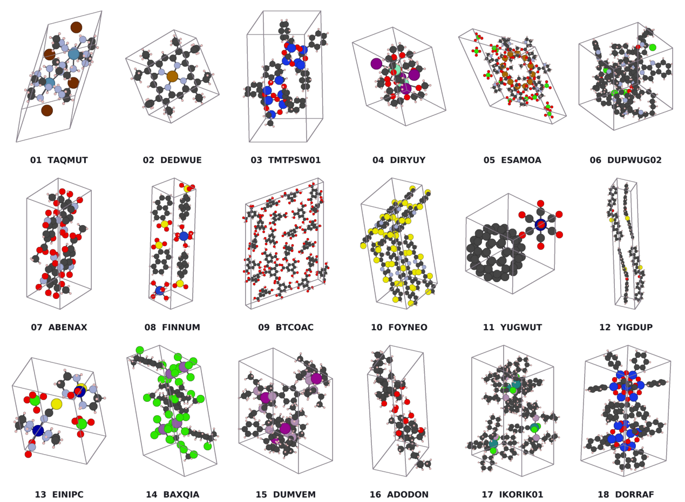
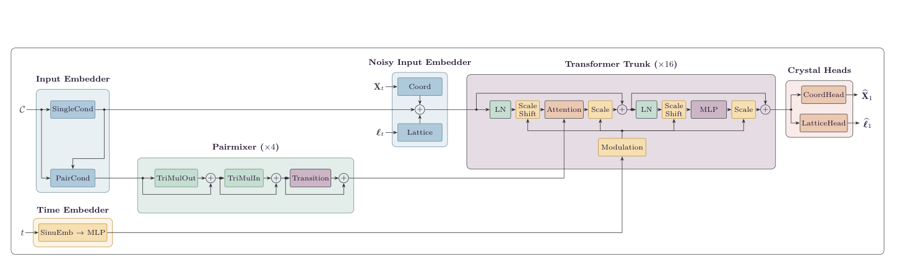
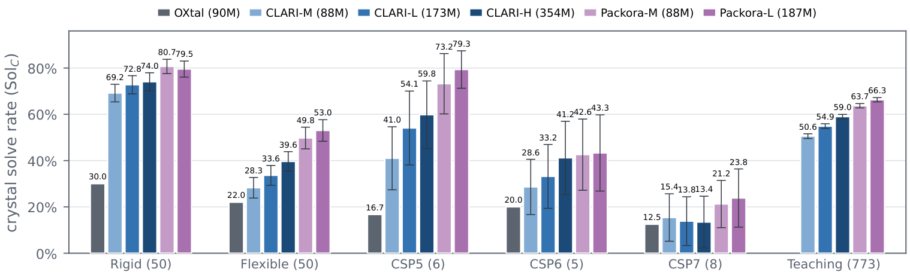
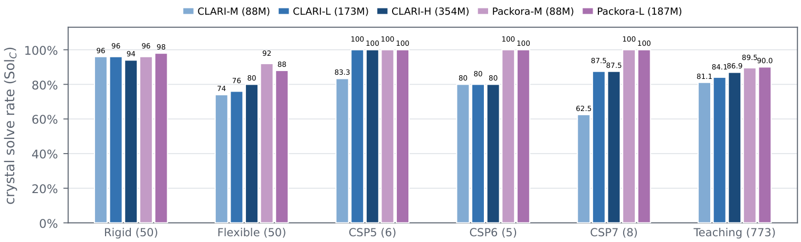
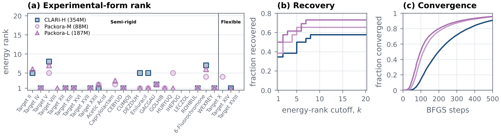
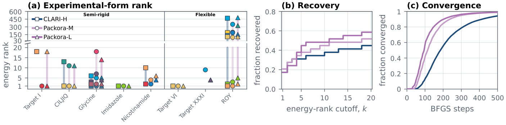
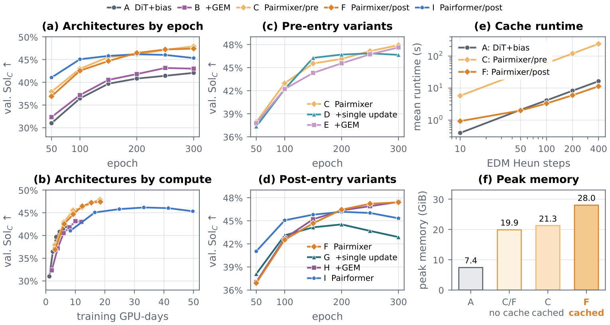
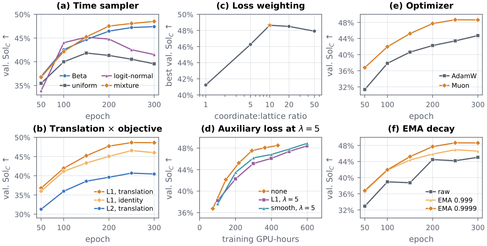
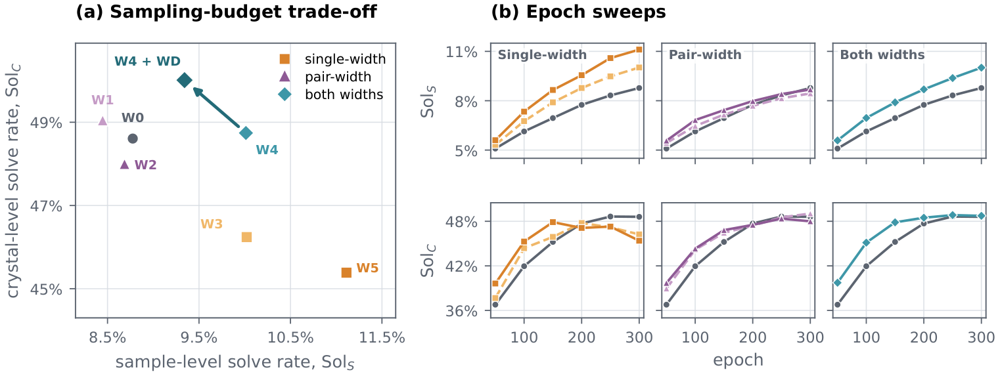

Packora: Systematic Design for Generative Molecular Crystal Structure Prediction
KAIST
Abstract
Molecular crystal structure prediction (CSP) is important in pharmaceuticals, agrochemicals, and organic electronics, where subtle differences in molecular conformation and packing can strongly affect material properties. We present Packora, a flow-based generative model for molecular CSP that jointly predicts atomic coordinates and the lattice from molecular graphs.
Packora supports multi-component and organometallic crystals and can condition on any subset of molecular conformers, stereochemical labels, and space-group information within a single model. Inspired by the CCDC CSP blind test, we evaluate generation and ranking separately, using generation to isolate generator quality and ranking to measure end-to-end performance under a common relaxation and ranking pipeline. We also systematically study architecture, training, conditioning, inference, and scaling, identifying an effective design based on cacheable pairwise reasoning, training objective and numerical solver choices, conditioning dropout, and balanced scaling of pairwise and single representations. Packora outperforms the baselines on both structure generation and ranking benchmarks, achieving the best matched-budget coverage across all six generation benchmarks, as well as higher experimental-form recovery, lower experimental-form ranks, and faster convergence in ranking.

Overview
Candidate generation for molecular crystal structure prediction
Molecular crystal structure prediction has two complementary stages. A generator first proposes candidate packings; a downstream workflow then relaxes the structures and ranks them by energy. Generative models address the first stage by learning from experimentally observed crystals and allocating a finite candidate budget to plausible packings.
Packora takes molecular or ionic component graphs—atom types, bond types, formal charges, and stoichiometry—and predicts Cartesian coordinates together with a periodic unit cell. Hydrogen atoms are represented explicitly, and the resulting structures can be passed directly to downstream relaxation and ranking methods.
- Flexible conditional generation. A single model supports molecular graphs alone or any combination of molecular templates, stereochemical labels, and space-group information.
- A matched two-track evaluation. Unranked finite-budget coverage is reported separately from performance after a shared relaxation and energy-ranking pipeline.
- A controlled design study. Architecture, training, conditioning, inference, and scaling are compared under a fixed protocol to establish an evidence-backed recipe.
Method
Joint coordinate–lattice flow matching
Packora learns a conditional flow over Cartesian atomic coordinates and lattice parameters. The model keeps a condition-only pair representation separate from the noisy crystal state, allowing the pair track to be computed once and reused during iterative generation. The resulting pair representation supplies attention biases to a diffusion-transformer trunk, followed by separate coordinate and lattice heads.
Condition dropout during training allows the same network to operate when local molecular templates, stereochemistry, or crystallographic information are present, partially specified, or absent.

Evaluation and results
Generation and downstream ranking are evaluated separately
In the generation track, an unranked finite candidate set is tested for the experimentally observed packing. No relaxation, energy ranking, replacement generation, or ranker-assisted downselection is used. In the ranking track, independent pools from each generator are processed through the same relaxation, filtering, deduplication, and lattice-energy ranking pipeline.
6 / 6 benchmarksPackora-M or Packora-L obtains the best or tied-best matched-budget generation coverage at both 30 and 1,000 candidates.
73.1% at Top-20Packora-L recovers experimental forms on the FastCSP single-polymorph benchmark, compared with 57.7% for CLARI-H.
58.6% at Top-20Packora-L recovery on the FastCSP multi-polymorph benchmark, compared with 44.8% for CLARI-H.




Systematic study
Controlled choices across the generation pipeline
The design study varies one component at a time. It identifies cacheable pairwise reasoning as the principal architectural improvement, and finds that robust endpoint learning benefits from a Beta-plus-uniform time distribution, random fractional crystal translations, and an L1 objective. The study also examines optional conditioning, numerical sampling, and the balance between single- and pair-track capacity.



Citation
Cite Packora
If you use Packora in your research, please cite the paper.
@misc{kim2026packorasystematicdesigngenerative,
title = {Packora: Systematic Design for Generative Molecular Crystal Structure Prediction},
author = {Nayoung Kim and Kiyoung Seong and Sungsoo Ahn},
year = {2026},
eprint = {2608.26962},
archivePrefix = {arXiv},
primaryClass = {cs.LG},
url = {https://arxiv.org/abs/2608.26962}
}